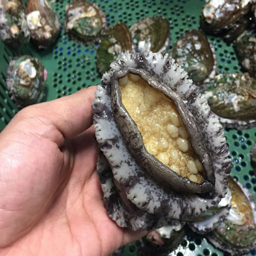

Top 5 hải sản nhập khẩu
III. Bào Ngư Hàn Quốc
Bào Ngư Hàn Quốc Tươi Sống Size 10-12 con/kg được nhập khẩu trực tiếp từ Hàn Quốc.
Bào ngư Hàn Quốc là món ăn của giới thượng lưu, bởi lẽ đây là một trong những thực phẩm có giá trị đắt đỏ mà
trước đây chúng chỉ dành cho bậc đế vương.
Giá trị dinh dưỡng và tác dụng của Bảo ngư Hàn Quốc:
- Trong thịt bào ngư Hàn Quốc có nhiều chất bổ dưỡng và vi lượng tốt cho sức khỏe và cho cơ thể như: có
đạm, kẽm, vitamin, canxi, khoáng chất…
- Sử dụng bào ngư giúp tăng cường sinh lý nam giới, giúp cho phụ nữ hồi phục sau sinh, thời kỳ mãn kinh.
- Đây còn được biết là một vị thuốc trong đông y. Được ứng dụng để điều trị rất nhiều chứng bệnh khác
nhau. Sử dụng cháo bào ngư thường xuyên giúp ổn định huyết áp, sáng mắt, trị ho, khó tiêu, hạ hỏa, thanh
nhiệt, trị viêm đường tiết niệu, huyết trắng….

Giá của bào ngư Hàn Quốc:
- Bào ngư size 10-12 con/kg có giá khoảng 1.200.000 đồng